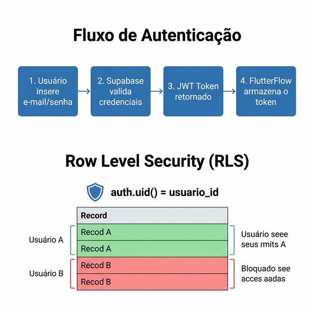

SEMANA 9 – Segurança com RLS (Row Level Security)
Nesta semana, você irá ativar e configurar as políticas de segurança (RLS) no banco de dados Supabase, garantindo que cada usuário acesse apenas os seus próprios dados — mesmo que tente acessar diretamente pela API.
Na Semana 6 você criou o projeto no Supabase, implementou a autenticação e o CRUD. Naquela etapa, o RLS estava desabilitado para facilitar os testes iniciais. Agora é o momento de ativar a segurança: configurar políticas que garantam que cada usuário acesse apenas seus próprios dados.
|
Sem o RLS, qualquer usuário autenticado poderia, em teoria,
ver e modificar os dados de todos os outros — basta conhecer
a URL da API. O RLS é a camada de segurança que impede isso, filtrando
automaticamente as linhas do banco com base no
|
Fonte: PostgreSQL.org; Supabase Documentation. |
9.1 O que é RLS (Row Level Security)
|
Row Level Security (RLS): mecanismo de segurança do PostgreSQL que permite controlar quais linhas cada usuário pode ler, inserir, atualizar ou excluir. No Supabase, as políticas RLS são definidas usando SQL ou o editor visual de políticas. |
A Figura 9.1 ilustra como o RLS funciona na prática: o usuário
faz login (recebe um JWT com seu auth.uid()), e ao consultar o banco,
o PostgreSQL automaticamente filtra as linhas usando a condição definida na política
(auth.uid() = usuario_id).

auth.uid() = usuario_id).9.2 Ativando o RLS nas Tabelas
- No painel do Supabase, acesse Table Editor → [nome da tabela].
- Clique em RLS disabled → Enable RLS.
- Acesse Authentication → Policies → New Policy.
- Crie políticas para SELECT, INSERT, UPDATE e DELETE usando
auth.uid() = usuario_idcomo condição. - Repita para todas as tabelas que contêm dados pessoais dos
usuários (
transacoes).
|
A tabela |
9.3 Exemplo de Políticas RLS (SQL Completo)
Veja abaixo o SQL para criar as políticas RLS completas na tabela
transacoes. O mesmo padrão pode ser aplicado a outras tabelas
que armazenem dados por usuário no futuro.
-- Habilitar RLS na tabela
ALTER TABLE transacoes ENABLE ROW LEVEL SECURITY;
-- Política: usuário só vê suas próprias transações
CREATE POLICY "Usuários veem suas transações"
ON transacoes FOR SELECT
USING (auth.uid() = usuario_id);
-- Política: usuário só insere transações suas
CREATE POLICY "Usuários inserem suas transações"
ON transacoes FOR INSERT
WITH CHECK (auth.uid() = usuario_id);
-- Política: usuário só atualiza suas transações
CREATE POLICY "Usuários atualizam suas transações"
ON transacoes FOR UPDATE
USING (auth.uid() = usuario_id);
-- Política: usuário só exclui suas transações
CREATE POLICY "Usuários excluem suas transações"
ON transacoes FOR DELETE
USING (auth.uid() = usuario_id);
|
Após ativar o RLS, toda consulta sem token JWT válido retornará zero resultados. Isso é o comportamento esperado e correto. Certifique-se de que o login está funcionando (Semana 6) antes de ativar o RLS. |
9.4 Testando a Segurança
Para validar que o RLS está funcionando corretamente:
- Crie dois usuários diferentes no app (e-mails distintos).
- Com o Usuário A, crie uma transação qualquer.
- Faça logout e faça login com o Usuário B.
- Verifique que a transação do Usuário A não aparece na listagem do Usuário B — se não aparece, o RLS está funcionando!
- Tente editar ou excluir a transação do Usuário A diretamente pela API (usando a URL do Supabase) — a operação deve ser bloqueada.
9.5 Entregável da Semana
|
Na próxima semana, você irá realizar os testes de integração completos do app, explorar o Realtime do Supabase e integrar APIs externas ao seu projeto.
9.6 Estudo de Caso: FinanCampus
Veja como o grupo do FinanCampus configurou o RLS nesta semana.
|
RLS ativado em todas as tabelas:
Teste de isolamento: criaram dois usuários (aluno1@teste.com e aluno2@teste.com). Cada um inseriu 3 transações. Ao alternar entre as contas, a listagem exibiu apenas as despesas do usuário logado ✅. Tentativa de acesso direto via API resultou em resposta vazia ✅. |